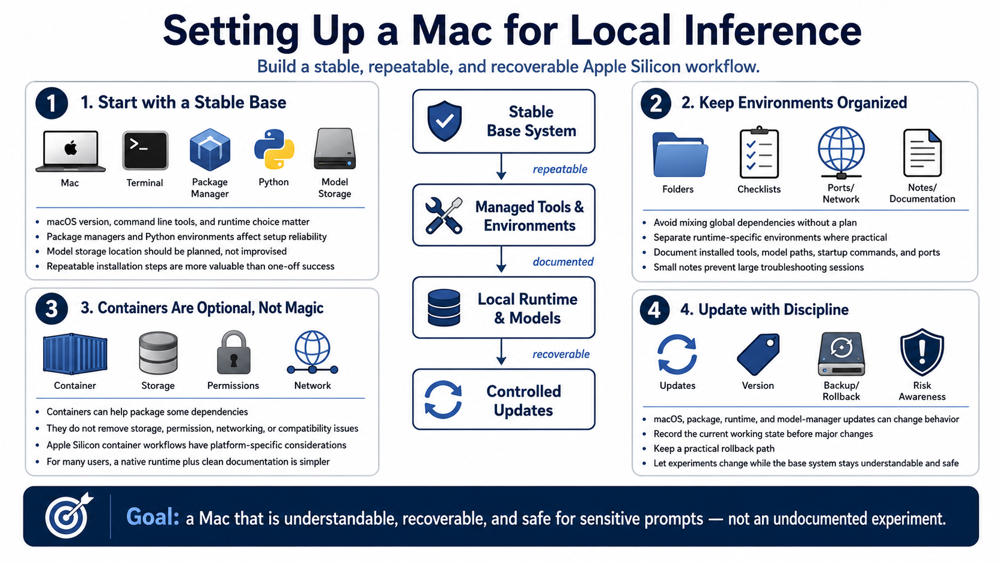

Setting Up a Mac for Local Inference
Connecting to LMS... Progress: in progress

Narration
Setting up a Mac for local inference starts with a stable base system. macOS version, command line tools, package managers, Python environments, runtime installation, and model storage all matter. The exact toolchain depends on the runtime, but the operating habit is consistent: make installation steps repeatable and avoid turning the daily-use system into an undocumented experiment.
Package managers and Python environments are useful, but they can also create confusion when dependencies are installed globally without a plan. Keep runtime-specific environments separated where practical. Document which tools are installed, where model files live, which commands start services, and which ports or interfaces are used. Small notes save large troubleshooting sessions later.
Containers may be useful at a high level for packaging some application dependencies, but Apple Silicon container workflows have their own platform and performance considerations. Containers do not remove the need to understand storage, permissions, networking, and runtime compatibility. For many local LLM users, a native runtime plus clean documentation is simpler than forcing every experiment into a container.
Update discipline is part of setup. A macOS update, package update, runtime update, or model manager update can change behavior. Before changing a stable system, record the current working state and keep a practical rollback path. The goal is to let experiments change while the base system remains understandable, recoverable, and safe to use with sensitive prompts or documents.